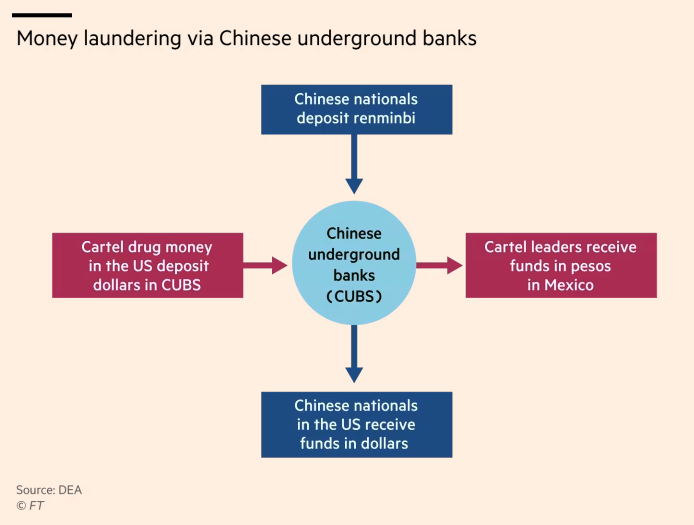

European commercial bonds; CCP Suppression of dissents’ children in US; money laundering network; Bolivian coup
(Chinese) Money Laundering related to Fentanyl
“The new money laundering network fuelling the fentanyl crisis”

“Chinese organised crime groups are laundering much of the cash accumulated by Mexican drugs cartels”
- “The money laundering groups are made up of networks of Chinese nationals living in the US and Mexico as well as individuals in China.” The relationship between Chiense and Mexican criminals expanded significantly with the exponential increase in Fentanyl revenue. It’s a “game-changer.”
“The underground banks operate largely by selling the cartels’ dollars to wealthy Chinese who, alarmed at the political tightening … are looking to circumvent capital controls and transfer their money out of the country.” The capital flight from China is estimated to be $738bn in 2022.
” Please use the sharing tools found via the share button at the top or side of articles. Copying articles to share with others is a breach of FT.com T&Cs and Copyright Policy. Email licensing@ft.com to buy additional rights. Subscribers may share up to 10 or 20 articles per month using the gift article service. More information can be found at https://www.ft.com/tour. https://www.ft.com/content/acaf6a57-4c3b-4f1c-89c4-c70d683a6619
““A lot of Chinese residents no longer believe that China’s economic trajectory is clearly positive, and thus no longer necessarily want to hold a large share of their wealth in China””

The network made the money circulation a lot more efficient than before. “Chinese organised crime groups in New York, Chicago and Los Angeles, who communicate via encrypted Chinese apps such as WeChat, have created an underground banking system that minimises the movement of funds across borders.” Local currencies, in other words, hardly cross borders.
Formerly, laundering (‘the Black Market Peso Exchange’) involved purchase of clothing or computers in the US, which then would be delivered to a 3rd party in Latin America and sold locally. The process was slow and expensive with many middlemen in between. Chinese groups offer the service at a much cheaper commission, effectively pushing out all competitors.
- The primary way of laundering: ‘mirror transfers’ using Chinese bank accounts that are practically invisible to US authorities.
- Cartels drop off USD cash to Chinese launders, who pay the cartels directly in the peso in Mexico. The USD cash launders have is sold to wealthy Chinese in the US, who repays the launders through Chinese bank accounts. The USD cash then could be spent on luxuries around the US (or college tuition).
- The primary way of laundering: ‘mirror transfers’ using Chinese bank accounts that are practically invisible to US authorities.
CCP Suppression of dissents’ children in US
“New Tactic in China’s Information War: Harassing a Critic’s Child in the U.S.”
a writer critical of CCP (currently in US) learned that his daughter in the US got harassed by sexually suggestive threats in social media and other crowd-sourced webpages (e.g., TripAdvisor).
“A covert propaganda network linked to the country’s security services” is believed to be behind it.
“The Spamouflage network” was first identified in 2019 (related to Hong Kong). “While the content often fails to go viral, the swarming nature of the attacks can be a nuisance, or worse, for those targeted.”
The story “fits a pattern” where CCP propaganda apparatus ramped up its efforts to discredit the critics through harassment–or ‘export of repression.’
- In 2023, for example, 40 officers of China’s National Police were indicted for repression schemes targeting US residents. [State Dept’s Link]
Coup attempt in Bolivia
“Bolivian general arrested after apparent coup attempt”
“Arce, a onetime protégé of former leftist leader Evo Morales, called on Bolivians to “mobilise against the coup plotters”. He then replaced Zúñiga with an army commander who called on the soldiers to stand down.”
- Arce and Morales, though, are now “caustic[ally] split”
- Morales previously said “he will run against Arce in next year’s presidential election. His term was marked by democratic backsliding as he championed indigenous rights”
“Juan José Zúñiga, who commanded the South American country’s army” was detained after a failed attempt to storm the presidential palace.
the demand included:
- new government
- release of several jailed politicians, including two opposition leaders
Zuniga argued after the capture that the whole thing was orchestrated by Arce for popularity.
NOT very clear who’s in charge and who’s behind the whole action–needs a follow-up
European commercial mortgage bonds
Top-rated European commercial mortgage bonds set for first losses since credit crisis
“Investors in several European commercial mortgage bonds that were originally sold with top credit ratings look set to suffer losses, say analysts, the first time since the global financial crisis”
Cause? “Rising borrowing costs over the past two years have triggered the worst downturn in commercial real estate since the 2008 global financial crisis”